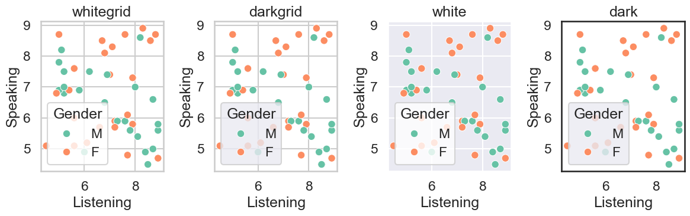
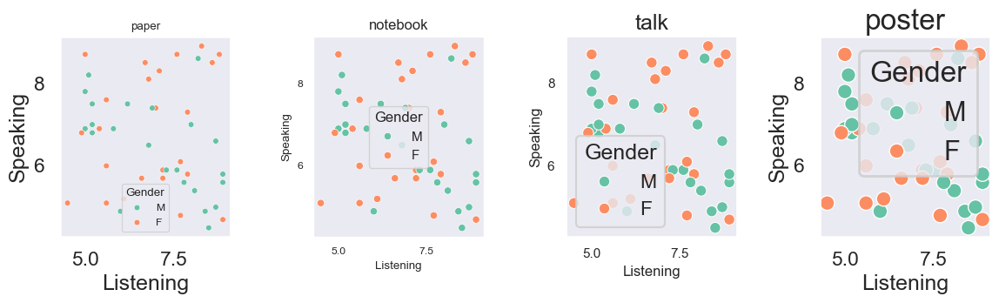
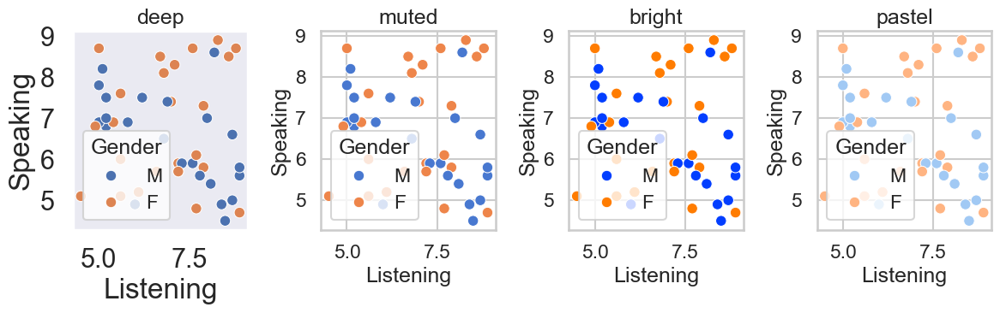

Seaborn 入门¶
Seaborn 是基于 Matplotlib 的高级可视化库。
特点：
默认风格美观，适合做统计图表。
和 Pandas DataFrame 无缝结合。
内置多种数据集（如 tips、iris、flights）。
内置统计功能（回归拟合、分布可视化）。
Seaborn 支持多种不同的数据集格式，大多数函数都能接受由 pandas 或 numpy 库的对象表示的数据，以及 Python 内置类型（如 列表 和 字典）。理解这些不同选项对应的使用模式，将帮助你快速为几乎任何数据集创建有用的可视化图表。
安装方法
pip install seaborn
与Pandas的绘图对比¶
主要是数据分析库，绘图功能是“附带的”，适合快速看数据，而且其绘图师基于 Matplotlib的，样式比较“原始”。
Pandas：只能画基本的折线、直方图、条形图、散点图等。
Seaborn：内置很多高级统计图，比如：
箱线图 (boxplot)、小提琴图 (violinplot) → 展示分布和差异
热力图 (heatmap) → 展示相关性矩阵
回归拟合图 (lmplot) → 自动加回归线
Pairplot → 多变量关系总览
快速入门¶
# 在 Python 中导入
import seaborn as sns
import matplotlib.pyplot as plt
散点图对比¶
Pandas 散点图
df.plot(kind="scatter", x="Listening", y="Speaking")
Seaborn 散点图（带分组和更美观样式）
sns.scatterplot(x="Listening", y="Speaking", hue="Gender", data=df)
plt.title("Listening vs Speaking Scores")
plt.show()
进行快速演示时，用 Pandas 自带的绘图功能已经足够，但在撰写分析报告或需要更高级的可视化时，Seaborn 会显得更加专业。
相关性检验¶
# 皮尔逊相关系数（Pearson Correlation）
df[["Listening", "Speaking"]].corr()
如果相关系数 > 0.6，说明二者关系较强，可以考虑作为学习上的配套指标。
美化¶
改变marker¶
把默认的圆点（"o") 换成 “x”，只需要设置 marker="x"，还可以用 marker="^"（三角形）、marker="s"（方块）等。
# 把默认的圆点（"o") 换成 “x”，只需要设置 marker="x"
sns.scatterplot(x="Listening", y="Speaking", hue="Gender", marker="x", data=df)
plt.title("Listening vs Speaking Scores")
plt.show()
Listening vs Speaking 散点图美化¶
import seaborn as sns
import matplotlib.pyplot as plt
sns.set_style("whitegrid") # 设置背景
sns.scatterplot(
x="Listening",
y="Speaking",
hue="Gender",
data=df,
marker="x", # 改 marker
s=100, # 点大小
alpha=0.6, # 透明度
palette="Set2" # 配色方案
)
plt.title("Listening vs Speaking Scores")
plt.xlabel("Listening Score")
plt.ylabel("Speaking Score")
plt.show()
主题与风格¶
sns.set_style("darkgrid") # 背景带网格
sns.set_context("talk") # 适合讲座展示
sns.set_palette("Set2") # 配色方案
Seaborn 全局设置速查表¶
功能 |
方法 |
可选参数值 |
示例 |
用途说明 |
|---|---|---|---|---|
背景风格 (style) |
|
|
|
控制背景和网格样式，常用 |
展示场景 (context) |
|
|
|
调整字体、线条、点的整体缩放比例，根据场景切换展示效果 |
配色方案 (palette) |
|
|
|
控制颜色风格，分组绘图时效果明显，能提升可读性和美观度 |
不同风格¶

不同场景¶

不同配色¶

绘图美化速查表¶
功能 |
参数/方法 |
示例 |
效果说明 |
|---|---|---|---|
点的形状 (marker) |
marker |
marker="x" |
点形状："o" 圆点 (默认)，"x" 叉号，"s" 方块，"^" 三角形 |
点的大小 (size) |
s |
s=100 |
控制点的大小 |
透明度 (alpha) |
alpha |
alpha=0.6 |
让点更透明，避免重叠过密 |
颜色 (color) |
color |
color="red" |
所有点统一颜色 |
调色板 (palette) |
palette |
palette="Set2" |
分组配色，可选 "deep", "Set1", "coolwarm" 等 |
背景风格 (style) |
sns.set_style() |
sns.set_style("whitegrid") |
可选 "white", "dark", "whitegrid", "darkgrid" |
展示场景 (context) |
sns.set_context() |
sns.set_context("talk") |
缩放字体/线宽/点大小；可选 "paper" < "notebook"(默认) < "talk" < "poster" |
趋势线 |
sns.lmplot() / sns.regplot() |
sns.lmplot(x="X", y="Y", data=df) |
自动加回归线，便于看趋势 |
标题 (title) |
plt.title() |
plt.title("Listening vs Speaking") |
添加图表标题 |
轴标签 (xlabel, ylabel) |
plt.xlabel(), plt.ylabel() |
plt.xlabel("Listening") |
设置横纵坐标说明 |